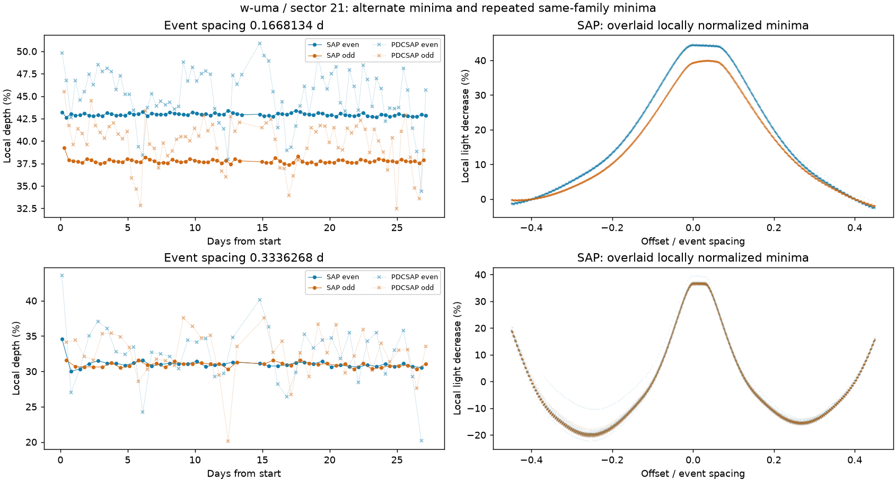
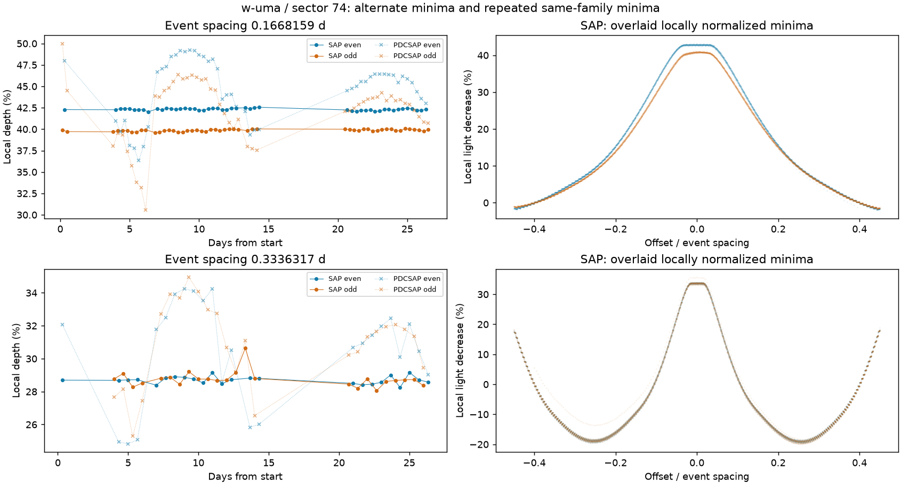
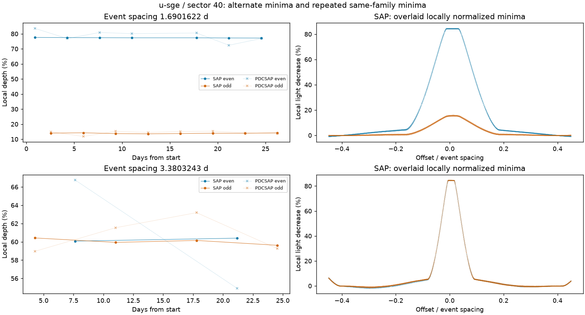
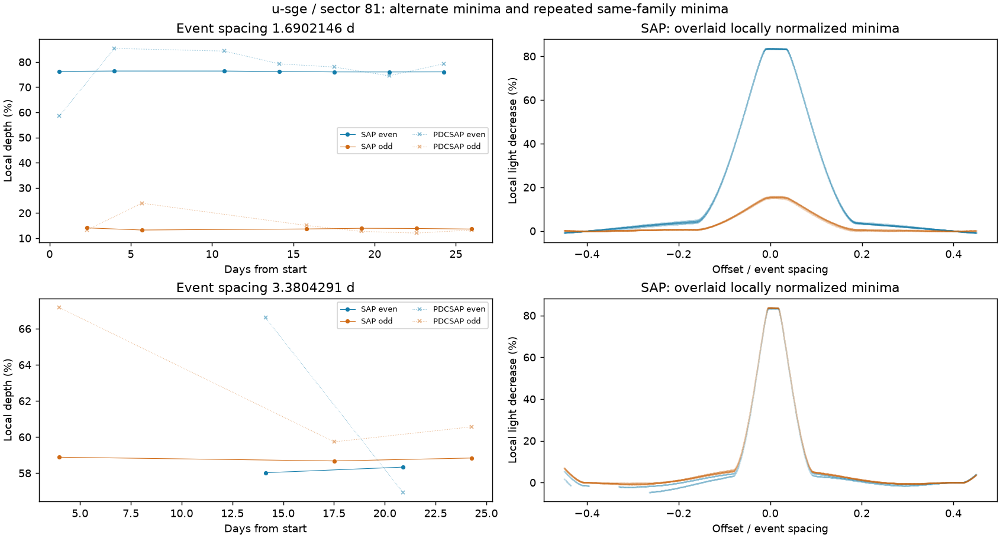

SAP 是在指定孔径内量到的亮度；PDCSAP 又做了去除仪器趋势等校正。校正通常有帮助，但有时也会改变大幅度的恒星变化。现在两种产品各自完整搜索周期，各自比较不同观测时段，不再只让 SAP 检查 PDCSAP 已选中的周期。
原 6 星组的 SAP 分支有 5 颗选对，PDCSAP 分支为 3 颗。W UMa 和 U Sge 在 SAP 的两个时段都恢复正确周期；RT Aur 长时段恢复约 3.7296 天，短时段仍不足以通过原要求。产品差异统一保留人工复核，不自动替换，也不宣布信号来自目标。
| 开发对象 | SAP 最终周期（天） | PDCSAP 最终周期（天） | 参考周期（天，仅评分） | 状态 |
|---|---|---|---|---|
| known-9473243 | 2.26697045 | 2.26710002 | 2.2669 | 两产品优选周期一致 |
| known-159717514 | 0.56684769 | 0.56683706 | 0.566775 | 两产品优选周期一致 |
| known-81709032 | 未选出 | 未选出 | 0.11157411 | 待查产品差异 |
| unavailable-2597145 | 未选出 | 未选出 | 1.4143 | 不可用，保留原分母 |
| unavailable-403072759 | 未选出 | 未选出 | 1.3029 | 不可用，保留原分母 |
| contamination-259238257 | 未选出 | 未选出 | 不按目标变星评分 | 未建立充分重复证据 |
| contamination-294052132 | 未选出 | 0.32466098 | 不按目标变星评分 | 待查产品差异 |
| w-uma | 0.33362928 | 未选出 | 0.3336334 | 待查产品差异 |
| rz-cas | 1.19522713 | 1.19528129 | 1.19525556 | 两产品优选周期一致 |
| u-sge | 3.38037672 | 未选出 | 3.380656 | 待查产品差异 |
| rt-aur | 未选出 | 未选出 | 3.72824 | 未建立充分重复证据 |
| sz-lyn | 0.12053546 | 0.12053546 | 0.12053525 | 两产品优选周期一致 |
| rs-boo | 0.37733548 | 0.37733548 | 0.3773369 | 两产品优选周期一致 |
13 个预选案例，11 个完成、2 个不可用，共 24 段观测，分别分析两种产品。两个历史污染案例也保留：本轮没有重做像素定位，产品一致不能推翻先前的污染证据。AI Vel 仍有多周期歧义，不能强行压成单一周期。
将变暗前后的局部亮度连成基线，再量谷底下降多少。蓝色和橙色分别表示相隔一次的两组极小；上排每次变暗都取，下排间隔一个极小再取。圆点是 SAP，浅色叉号是 PDCSAP。右图是对齐后的 SAP 形状。
上排两种颜色若持续分开，说明相邻极小确实不同，不能把它们直接当成相同的循环。下排比较重复的同类极小。两排取样窗口不同，深度数字不能直接跨排比较。局部窗口也可能包含恒星结构，这些深度不是标定星等或正式双星模型。

| 间隔 | 产品 | 可量事件 | 相邻配对 | 偶/奇极小深度中位数 | 配对平均差 |
|---|---|---|---|---|---|
| 0.1668134 天 | SAP | 156 | 77 | 42.956% / 37.729% | 5.197 个百分点 |
| 0.1668134 天 | PDCSAP | 156 | 77 | 45.688% / 40.389% | 5.233 个百分点 |
| 0.3336268 天 | SAP | 78 | 39 | 31.012% / 31.030% | 0.111 个百分点 |
| 0.3336268 天 | PDCSAP | 78 | 39 | 32.990% / 32.976% | -0.055 个百分点 |

| 间隔 | 产品 | 可量事件 | 相邻配对 | 偶/奇极小深度中位数 | 配对平均差 |
|---|---|---|---|---|---|
| 0.1668159 天 | SAP | 100 | 47 | 42.307% / 39.867% | 2.439 个百分点 |
| 0.1668159 天 | PDCSAP | 100 | 47 | 45.533% / 42.993% | 2.828 个百分点 |
| 0.3336317 天 | SAP | 48 | 21 | 28.710% / 28.723% | 0.019 个百分点 |
| 0.3336317 天 | PDCSAP | 48 | 21 | 31.180% / 31.340% | -0.390 个百分点 |

| 间隔 | 产品 | 可量事件 | 相邻配对 | 偶/奇极小深度中位数 | 配对平均差 |
|---|---|---|---|---|---|
| 1.6901622 天 | SAP | 15 | 7 | 77.336% / 13.935% | 63.406 个百分点 |
| 1.6901622 天 | PDCSAP | 15 | 7 | 80.098% / 14.666% | 64.497 个百分点 |
| 3.3803243 天 | SAP | 6 | 2 | 60.238% / 60.044% | 证据对数不足 |
| 3.3803243 天 | PDCSAP | 6 | 2 | 60.834% / 60.397% | 证据对数不足 |

| 间隔 | 产品 | 可量事件 | 相邻配对 | 偶/奇极小深度中位数 | 配对平均差 |
|---|---|---|---|---|---|
| 1.6902146 天 | SAP | 13 | 6 | 76.225% / 13.750% | 62.456 个百分点 |
| 1.6902146 天 | PDCSAP | 13 | 6 | 79.270% / 13.229% | 60.835 个百分点 |
| 3.3804291 天 | SAP | 5 | 2 | 58.180% / 58.839% | 证据对数不足 |
| 3.3804291 天 | PDCSAP | 5 | 2 | 61.774% / 60.567% | 证据对数不足 |
事件配对重采样区间仅作诊断，未标定相关噪声、基线和周期误差；不能当成严格置信度。U Sge 下排每时段只有两对完整事件，程序没有计算该项区间，也没有把缺失事件补成数据。
查到了 Gaia 标准星的短时稳定性监测及 SDSS Stripe 82 标准星目录。但前者多为小时尺度，后者取样稀疏、较暗，波段和精度也不同。它们可以提供待审候选，不能直接给 TESS 的 0.05–8 天筛选当作已确认反例。本轮没有增加“可靠实测安静星”的分母。